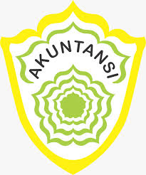

Jurusan Akuntasi
urusan Akuntasi dan Keuangan Lembaga Akuntansi adalah sebuah Kompetensi Keahlian (Jurusan) yang sangat berhubungan dengan angka dan hitung menghitung. Hampir setiap hari kalian akan dihadapkan dengan pelajaran hitung menghitung. Jika kalian di SMP sudah menyukai pelajaran matematika, saya sarankan jangan ragu lagi untuk memilih Kompetensi Keahlian (Jurusan) Akuntansi dan Keuangan LembagaTujuan
- Membentuk siswa yang berfikir login\s dan cerdas dalam menganalisa data keuangan.
- Membentuk siswa yang dapat memegang teguh disiplin dalam mengolah data akuntansi dan keuangan.
- Membentuk siswa yang dapat memegang teguh moral, kejujuran dan mempunyai i'tikad baik dalam mengolah data akuntansi.
- Mempersiapkan siswa menjadi tenaga kerja yang trampil dalam bidang akuntansi dan keuangan.
Ruang Lingkup Pekerjaan
- Setiap Departemen pada bagian keuangan
- Kantor Swasta pada bagian keuangan
- Pegadaian
- kantor Pajak
- Perbankan
- Kantor Beacukai
- dan lain-lain yang berhubungan dengan keuangan
Kompetensi Keahlian Akuntansi dan Keuangan Lembaga dapat melanjutkan kuliah di:
- Fakultas Ekonomi
- Perbankan
- Perpajakan
- Sekolah Tinggi Akuntasi Negara (STAN)
- Beacukai
- Komputerisasi Akuntasi